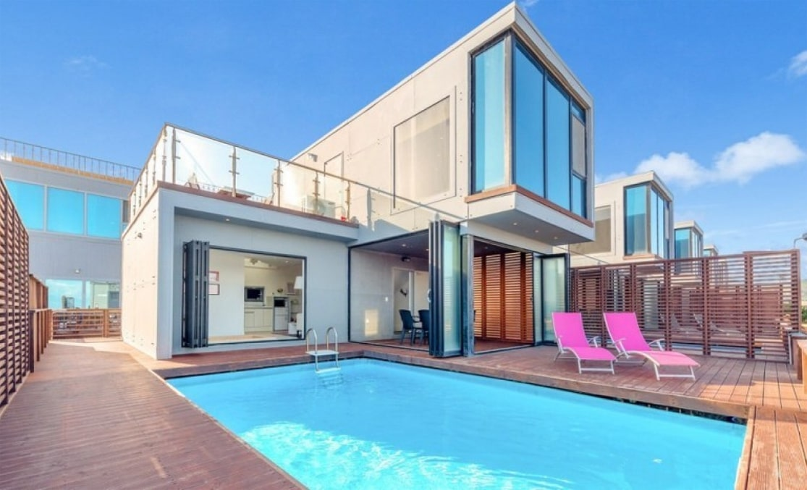

가평 다온펜션을 소개합니다

ABOUT US
그리스 산토리니를 옮겨담은 펜션
아름다운 자연에서 즐기는 힐링펜션 가평 다온펜션에 오신것을 환영합니다 저희 다온펜션은 아름다운 칼봉산 자락에 위치하고있으며 넓은 전경을 감상하실수 있습니다. 모던한 이미지와 깔끔한 객실을 자랑하며 일상속에서 벗어나 자연속으로 쉴수 있도록 노력하겠습니다
WHY DAON?
가족 연인 친구 모두가 행복한 시간
예쁜 조경과 탁트인 경치 저녁시간만 되면 셀수없이 많은 별들 가평의 주요관광지인 남이섬, 칼봉선짚라인, 가평이화원, 자라섬등 다양한 볼거리와 놀거리를 즐길수 있는 기회 가평 다온펜션에서 여러분을 초대합니다
LOCATION
찾아오시는길 주소 : 경기도 가평군 가평읍 경반안로 357-187 (경반리 583-34)